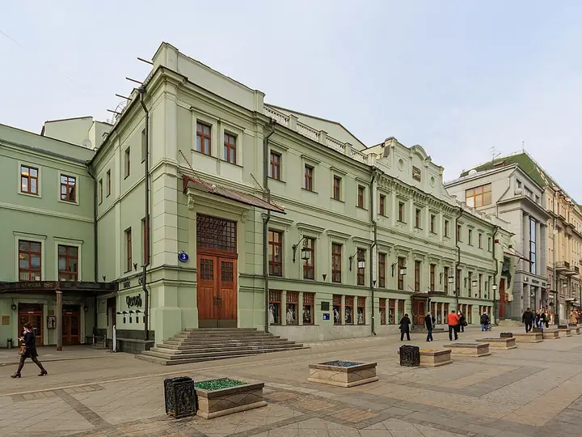

Подборку собрали 20 октября, прошедшие события скрыты. Свежая афиша — на главной

Фото: A.Savin, Free Art License · Wikimedia Commons
Театр · ЦАО
МХТ имени Чехова
Легендарный Художественный театр в пешеходном Камергерском переулке.
- ₽₽ · 1 500–3 000 ₽ на человека
- в 1 плане
- 4 события в афише
Позвать сюда: МХТ имени ЧеховаОткрыть в каталоге: МХТ имени ЧеховаМаршрут до места: МХТ имени Чехова
Адрес и детали
- Адрес
- Камергерский пер., 3
Открыть на Яндекс Картах (в новой вкладке) - Метро
- м. Охотный ряд
- Округ
- Центр (ЦАО)
- Цена
- 1 500–3 000 ₽ на человека
- Телефон
- +7 (495) 646-36-46
- Проверено
- работает — проверили в октябре 2026
Планы с этим местом 1
- МХТ имени Чехова · Театр · м. Охотный ряд
- 3 минуты пешкомАнна · Французский ресторан
Спектакль в Художественном театре и ужин в «Анне» в двух шагах от Камергерского.
Открыть план: МХТ и французский ужинПозвать сюда: МХТ и французский ужин
Фото: A.Savin, Free Art License · Wikimedia Commons

Афиша площадки 4
МХТ имени Чехова, Основная сцена · м. Охотный ряд · 1 000–35 000 ₽ · 18+
Премьера Андрея Гончарова: Шекспир как семейная драма о ревности и борьбе за мать. Принц — Юра Борисов, с 25 ноября — Оливер Мара. 1 ч 40 мин.
Подробнее: ГамлетПозвать сюда: ГамлетБилеты : Гамлет (страница с билетами, откроется в новой вкладке)
Фото: A.Savin, Free Art License · Wikimedia Commons
МХТ имени Чехова · м. Охотный ряд · 16+
Булгаков о Мольере: великий актёр, король и цена милости власти. Постановка Юрия Квятковского с Константином Хабенским, три часа с антрактом.
Подробнее: Кабала святошПозвать сюда: Кабала святошБилеты : Кабала святош (страница с билетами, откроется в новой вкладке)
Фото: A.Savin, Free Art License · Wikimedia Commons
МХТ имени Чехова, Основная сцена · м. Охотный ряд · 500–7 500 ₽ · 18+
Николай Рощин сплёл Сервантеса и Булгакова: репетиции «Дон Кихота» в театре конца 1930-х превращаются в историю о цене творчества. Около двух часов.
Подробнее: Дон КихотПозвать сюда: Дон КихотБилеты : Дон Кихот (страница с билетами, откроется в новой вкладке)
Фото: A.Savin, Free Art License · Wikimedia Commons
МХТ имени Чехова, Основная сцена · м. Охотный ряд · 18+
Декабрьская премьера Никиты Кобелева: толстовский «Живой труп» перенесён в наши дни, Фёдора Протасова играет Филипп Янковский.
Подробнее: ПротасовПозвать сюда: ПротасовБилеты : Протасов (страница с билетами, откроется в новой вкладке)
Фото: A.Savin, Free Art License · Wikimedia Commons
Похожие рядом

Что ещё рядом
Как позвать
- Выбери план, место или событие — в карточке адрес, цены и маршрут в Яндекс Картах.
- Нажми «Позвать сюда» — соберётся приглашение-игра для свидания или голосование для компании.
- Отправь ссылку в любой мессенджер: тебе ответят, а компания отметит, куда и когда может. Бесплатно и без регистрации.